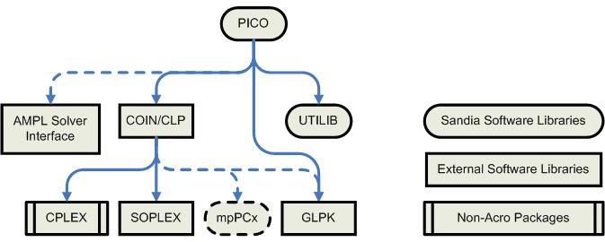

PICO depends on UTILIB for many basic data structures and system utilities. Additionally, PICO uses the COIN interface library to encapsulate linear programming solvers. Two publicly available linear programming solvers are integrated into Acro: SOPLEX and CLP (which is included in COIN). The mpPCx parallel linear programming solver is also being developed at Sandia (this is currently not part of Acro). PICO has been integrated with the GLPK package to support a public domain interface to AMPL integer programming problems. PICO has also been integrated with the AMPL package, which includes the AMPL routines for setting up an AMPL solver.